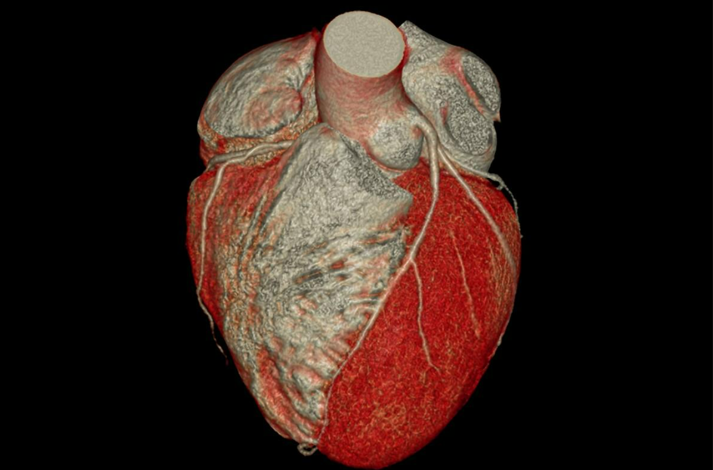
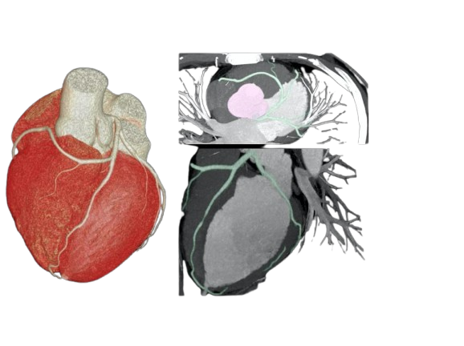
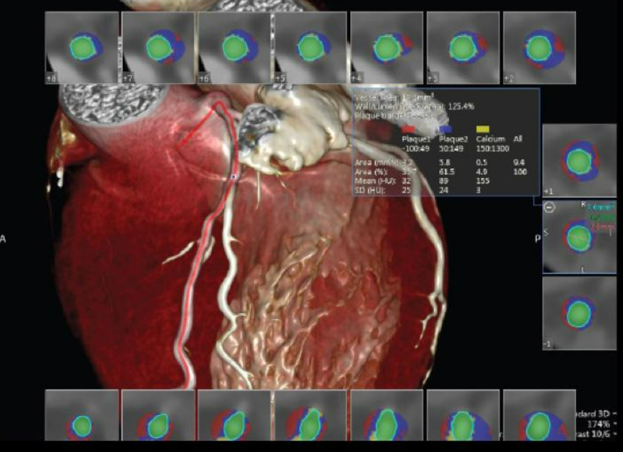
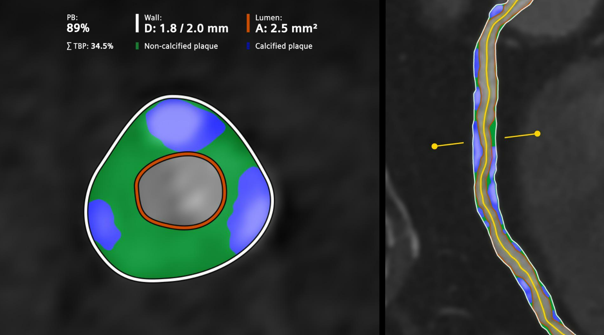
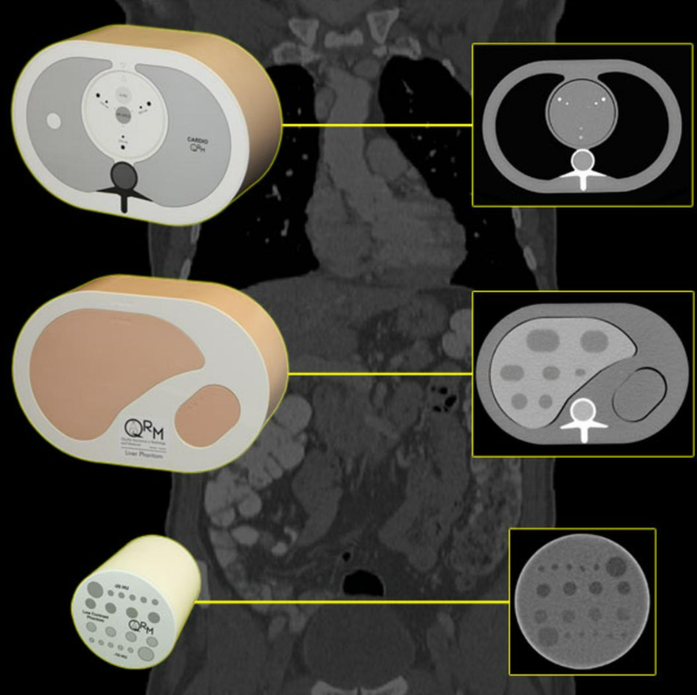
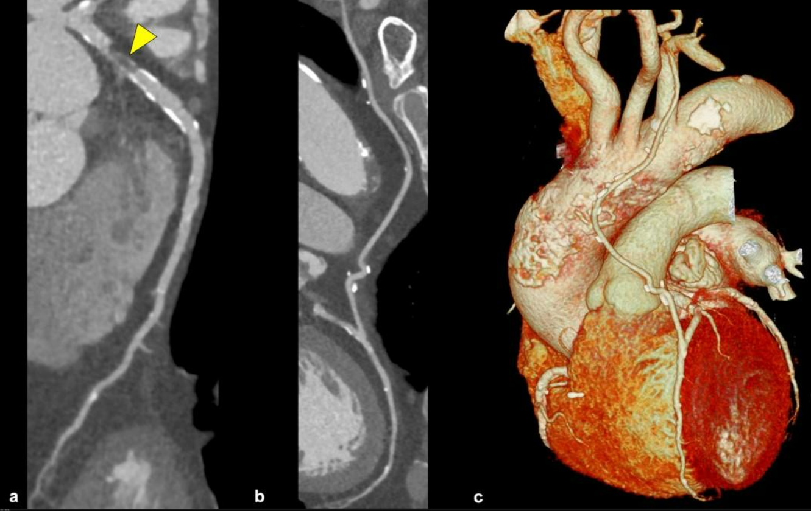

Advancing Cardiovascular Imaging and Patient Care
CIARC Lebanon is a Cardiovascular Imaging & Research Centre based in Beirut, dedicated to supporting cardiovascular care through advanced medical imaging, clinical expertise, and scientific research.
Our focus is on the application of modern cardiovascular imaging techniques to improve the understanding, assessment, and management of cardiovascular diseases. By connecting clinical practice with research and education, we aim to contribute to better diagnostic approaches and informed patient care.

Cardiovascular Imaging
Cardiovascular imaging examinations
Clinical Expertise
Years of combined clinical experience
Core Areas
Imaging, Research & Education
From Cardiovascular Imaging to Better Patient Care
At CIARC Lebanon, our approach connects cardiovascular imaging, clinical assessment, research, and education. We focus on how imaging can support the understanding of cardiovascular disease, guide clinical decisions, and contribute to improved patient care.
Improving Cardiovascular Care
Our ultimate goal is to connect advances in cardiovascular imaging and research with meaningful clinical applications. By supporting informed assessment and decision-making, we aim to contribute to better cardiovascular care and patient outcomes.
Advanced Imaging, Quantitative Analysis & Clinical Research
Connecting advanced cardiovascular imaging with meaningful clinical information. Modern imaging technologies provide detailed insights into cardiovascular anatomy, disease characteristics, and cardiac function.
At CIARC Lebanon, our focus is on the integration of cardiovascular imaging, quantitative assessment, and research. We aim to support the interpretation of imaging findings and their application in cardiovascular evaluation and care.
Developments in image analysis and artificial intelligence offer new opportunities to study cardiovascular disease, improve measurement consistency, and support clinical research.

Cardiovascular Prevention, Reporting & Follow-Up
Cardiovascular imaging provides valuable information beyond traditional risk factors. By examining coronary anatomy, plaque characteristics, and other imaging findings, clinicians can gain a clearer understanding of cardiovascular disease and its potential risks.
Structured imaging reports can support clinical decision-making, preventive strategies, and long-term patient follow-up. At CIARC Lebanon, we recognize the importance of connecting imaging findings with meaningful clinical assessment.
To help translate cardiovascular imaging findings into clear, clinically relevant information that supports prevention and patient care.
CT-Based Cardiovascular Assessment & Personalized Care
Advanced imaging can provide detailed anatomical information and support the evaluation of coronary artery disease and plaque characteristics.

Understanding Coronary Plaque
Coronary CT can help characterize plaque and provide information relevant to cardiovascular risk assessment.
Non-Calcified Plaque
Plaque without visible calcium, assessed through CT imaging.
Calcified Plaque
Calcium-containing plaque that can be identified on CT.
Overall Plaque Burden
Assessment of plaque extent as part of the clinical picture.
Longitudinal Treatment Response
Understanding how cardiovascular disease changes over time. Serial coronary CT angiography (CCTA) can help assess changes in coronary plaque characteristics during treatment and follow-up.
Longitudinal imaging studies allow researchers to examine plaque progression or regression and investigate how cardiovascular disease responds to different therapeutic approaches.
Quantitative imaging measurements can provide valuable information for clinical research, including studies evaluating lipid-lowering and anti-inflammatory therapies.
Key Imaging Measurements
- Changes in total coronary plaque volume
- Non-calcified and calcified plaque assessment
- Evaluation of high-risk plaque characteristics
- Longitudinal comparison of imaging findings

Advancing Cardiovascular Imaging Through Clinical Research
Photon-counting computed tomography represents an important development in cardiovascular imaging, offering opportunities for improved spatial resolution and more detailed tissue characterization.
The clinical value of emerging imaging technologies depends not only on image quality, but also on how imaging findings contribute to diagnosis, treatment planning, and patient care.
Connecting technological innovation with meaningful cardiovascular assessment and clinical applications.
Precision in Every Measurement

Reliable cardiovascular imaging begins with accurate and reproducible measurements. The quality of quantitative CT analysis depends on several factors, including scanner performance, image acquisition, reconstruction techniques, and measurement methods.
Phantom-based research provides a controlled environment for evaluating imaging performance against known reference measurements. This helps researchers understand measurement accuracy, consistency, and potential sources of variation.
These methods can contribute to the assessment of imaging protocols and quantitative analysis techniques, supporting more reliable cardiovascular research and clinical interpretation.
From Reference Measurements to Validated Imaging Methods
A structured approach to evaluating quantitative CT measurement accuracy and reproducibility.
-
01
Reference Standard
Establish known measurements for comparison.
-
02
Image Acquisition
Apply defined CT acquisition and reconstruction settings.
-
03
Quantitative Analysis
Perform imaging measurements using selected methods.
-
04
Accuracy Assessment
Compare results with reference measurements.
-
05
Validated Protocol
Support consistent and reliable imaging assessment.
CT-Guided Intervention & Procedural Planning
Cardiovascular CT is increasingly valuable beyond diagnosis. Advanced CT imaging can provide detailed anatomical information to support interventional planning, treatment decisions, and procedural assessment.
Coronary CT angiography can help clinicians evaluate coronary anatomy, characterize complex lesions, and better understand anatomical considerations before cardiovascular procedures.
Areas of Clinical Application
- CT-based assessment for coronary intervention planning
- Evaluation of calcified coronary lesions and vascular anatomy
- Imaging assessment of coronary stents and vessel characteristics
- CT-based evaluation of structural and valvular heart disease
- Assessment of aortic anatomy and selected follow-up imaging

Bringing Clinical Expertise and Research Together
A Multidisciplinary Approach to Cardiovascular Imaging
Cardiovascular imaging and research bring together expertise from multiple medical and scientific disciplines. At CIARC Lebanon, our approach emphasizes collaboration, clinical knowledge, and the application of advanced imaging techniques to cardiovascular assessment.
A multidisciplinary cardiovascular imaging team can include cardiologists, radiologists, cardiovascular imaging specialists, medical researchers, imaging technologists, and clinical research professionals.
Cardiologists
Clinical expertise in cardiovascular disease, cardiac assessment, and patient management.
Radiologists & Imaging Specialists
Expertise in advanced cardiovascular imaging, image interpretation, and diagnostic evaluation.
Medical Researchers
Scientific investigation, imaging research, quantitative analysis, and clinical validation.
Medical Imaging Technologists
Technical expertise in imaging procedures, image acquisition, and quality assurance.
Clinical Research Professionals
Research coordination, study documentation, data management, and collaboration across clinical research activities.
Data & Imaging Analysts
Quantitative imaging analysis, data processing, and evaluation of emerging analytical tools.
Collaborate with CIARC Lebanon
Interested in cardiovascular imaging research, clinical studies, educational initiatives, or scientific collaboration? We welcome inquiries from healthcare professionals, researchers, academic institutions, and potential partners.
Get in Touch